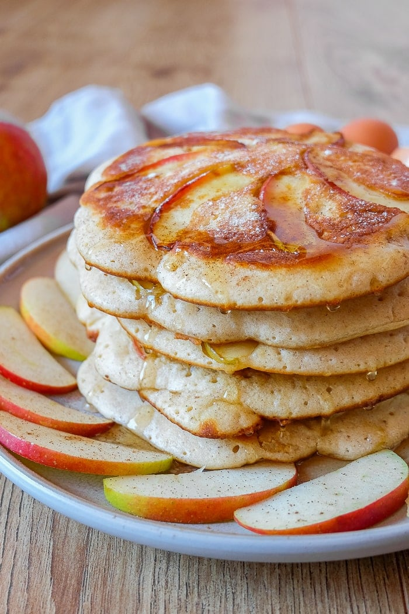

Apple Pancake

Description
Searching for a sweet and delicious treat that can be breakfast, brunch, dinner, or an after-dinner dessert? German apple pancakes are what you’re looking for!
Super fluffy and perfectly sweet, these apple pancakes are loaded with fresh apple and served hot right from the pan!
Ingredients
- 1 1/2 medium-sized apples
- 3 medium-sized eggs
- 2 cups flour
- 1/2 cup sugar
- 1 cup milk
- 1 teaspoon cinnamon
- a pinch of salt
- 5 tablespoons oil
Steps
- Wash the apples and peel them, if desired. Cut the one whole apple into small cubes and the 1/2 apple into very thin slices. See the photo above for reference. Optional: You can sprinkle some lemon juice on top of the apples to avoid browning. Set the apples aside for now.
- Separate the eggs and put the egg whites into a medium-sized mixing bowl. Make sure that no egg yolk gets into the egg whites.
- Use an electric hand mixer to beat the egg whites until they are stiff. When tilting the bowl, the egg whites should barely move. This means that they are stiff enough.
- In a separate bigger mixing bowl, beat the egg yolks, milk and sugar until the mixture becomes frothy.
- Mix the flour, salt, and cinnamon together and add it to the egg yolk mixture in small increments with your electric mixer on the lowest setting. Keep mixing until the batter is smooth. At this point, your batter might be quite thick – that’s okay.
- Set your hand mixer aside and carefully fold the beaten egg whites into the egg yolk batter with a spatula. Add in the apple cubes (not the slices!) and slowly fold them into the batter as well.
- Heat 1 tablespoon of oil in a pan and add approximately one soup ladle of batter per pancake. Since the batter can be quite thick, smooth it out with your ladle or a spoon. Now add the little slices of apple on top of the batter in the pan. You can get creative with your design but should not overlap apple slices to allow for even cooking.
- Fry your pancake on medium-heat for approximately 5 minutes on the first side, flip it, and then fry it for a slightly shorter amount of time on the other side. Once both sides are golden brown, remove your pancake from the pan and repeat the steps until all your pancake batter has been used up.
- Serve your pancakes with powdered sugar (traditional), maple syrup, or jam. Apple pancakes also go well with bacon for a North American brunch.